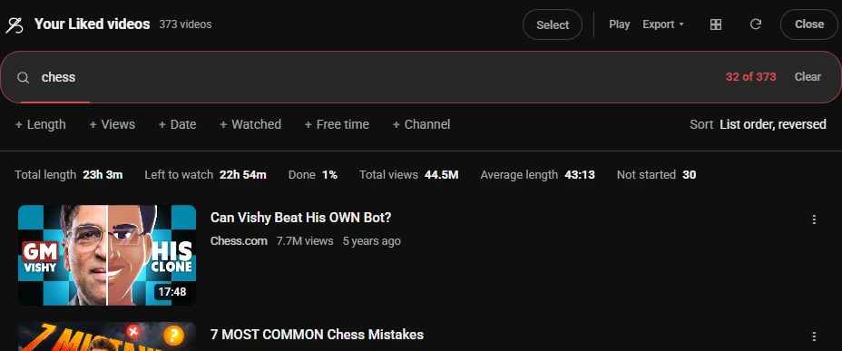

Guide 21·Liked videos
How to see your oldest liked videos on YouTube.
Updated 17 November 2026
Short answer
YouTube can't sort your Liked videos. The page always starts with the video you liked most recently, loads 100 at a time, and has no sort menu at all. Needle reads the whole list and turns it around: set its sort to List order, reversed and your first like is at the top.
01·On YouTube
What YouTube gives you
Open Liked videos (under You in YouTube's menu). Checked on 17 November 2026, the page has Play all, Shuffle, a download button, and chips for All, Videos and Shorts. Its ⋮ menu has one thing in it, Show unavailable videos. There's no sort.
So the list always runs from the video you liked most recently down to the first one, and it loads 100 at a time. Your oldest like is at the very end.
02·scroll
Without an extension: scroll to the end
- Open Liked videos.
- Press End and wait for the next 100 to load. Again, until nothing more comes.
- The last video on the page is the first one you liked.
It works, once. A few hundred likes is a few rounds of waiting; a few thousand is a long while, and there's no going backwards through them from there, only scrolling up.
03·With Needle
Turn it around with Needle
- Open Liked videos.
- Press the needle button in the bottom right corner, or Alt+Y.
- If the panel says First 100 only, press Read all beside it, or switch on Deep reading in Needle's settings so every list is read in full.
- Set Sort to List order, reversed. Your first like is now at the top.

Type a word on top, as above, and it's your oldest likes on that one subject. unwatched leaves only the ones you never started, and the line above the list adds up how long they all run.
04·more
Then what
- Watch them again in order. Play plays what's showing, in that order, up to 50 at a time.
- Keep a copy. Export saves the list as a spreadsheet, with titles, links and lengths. What each export contains.
- Find one. Typing in the panel matches titles and channel names. Searching your liked videos covers that, and
in:likedin YouTube's own search bar.
The same panel and the same reversed sort work on any playlist, and on Watch Later, where the oldest saves are usually the ones that got forgotten.
05·Questions
Questions?
Can you sort liked videos on YouTube?
No. The Liked videos page has Play all, Shuffle and chips for All, Videos and Shorts, and its ⋮ menu only offers to show unavailable videos. There's no sort, so it's always newest like first.
How do I see the first video I ever liked on YouTube?
With Needle: open Liked videos, read the whole list, and sort it List order, reversed. The first card is your oldest like that's still on YouTube. Without it, scroll to the very bottom of the Liked page, 100 videos at a time.
Oldest like, or oldest video?
Both are there. List order, reversed goes by when you liked each one. Oldest upload goes by when each video was posted, so a 2009 video you liked last week comes first.
Why does YouTube say more videos than Needle shows?
YouTube's count includes videos that were deleted or made private since you liked them, which the page hides. On the account checked for this guide, YouTube said 410 and 373 were still there.
Can I play my likes oldest first?
Yes. Once they're in that order, Play in Needle's panel plays them in order, up to 50 at a time, as a temporary YouTube playlist.
How far back does it go?
As far as your Liked list does, up to the Video limit in Needle's settings: 1,800 by default, and up to 10,000.
Does Google Takeout have my liked videos?
Takeout's YouTube export lists them the way it lists playlists: video IDs and the date each was added, without titles.
Is my Liked list sent anywhere?
No. Needle has no server. It reads the list from YouTube with your own sign-in, in your browser, and keeps it on this device.
Is it free?
Yes. No account, no trial, no paid tier.